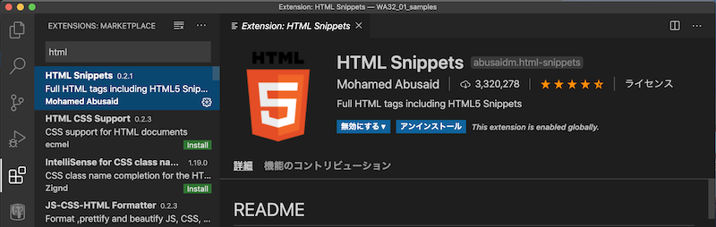

WA32_1：WebAPI I
VSCode(Visual Studio Code)
VSCode ダウンロード
ショートカット
| Action | Mac | Windows |
|---|---|---|
| コマンドパレット | Shift + Command + 9 | Shift + Ctrl + 9 |
| エクスプローラー | Shift + Command + E | Shift + Ctrl + E |
| 機能拡張 | Shift + Command + X | Shift + Ctrl + X |
機能拡張インストール
HTML Snippets

JavaScript (ES6) code snippets

jQuery Code Snippets

Live Server

Git
Mac：標準インストール
動作確認
$ git --version
git version 2.21.1 (Apple Git-122.3)
Windows：インストーラダウンロード
ダウンロード